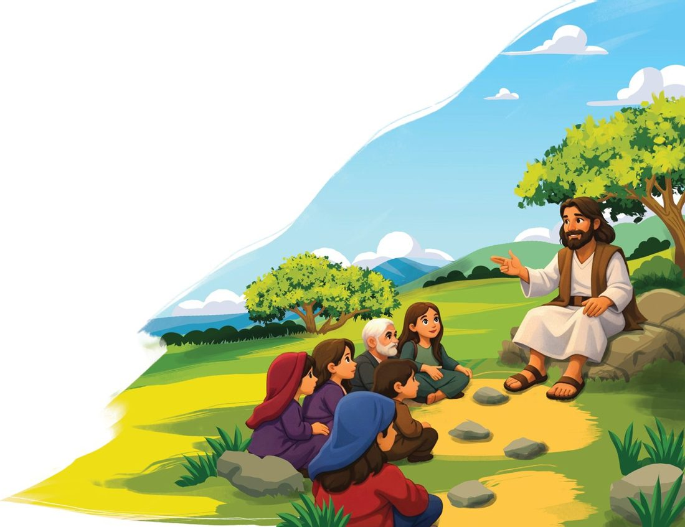

Jesus
…was an ancient teacher who reminded people they were loved.
Listen to what Jesus said:
“The kingdom of heaven is within you.”
Here’s what I think he meant:
A lot of people think heaven is a faraway place in the clouds. But Jesus is telling us that, actually, heaven is inside of you. Right now. When we’re calm, and we have that feeling of warmth and peacefulness… that’s a taste of heaven. We carry it with us wherever we go. We always have. And we always will.